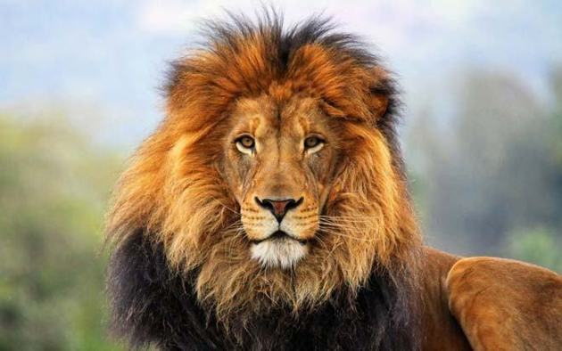

Histórias dos grandes Leões da África
Nesse site eu irei citar algumas histórias antigas e algumas histórias esquecidas que quase ninguém conhece ou nunca ouviu falar,
vou citar histórias dos grandes leões da África e suas histórias como se tornaram rei qual foi a primeira luta e como morreram.

Scarface o leão que derrotou 179 leões em 179 lutas
 Esse Leão ficou conhencido como o grande Rei Leão, por que ele derrotou 179 Leões em 179 lutas.
O Nascimento e as Origens :
O dia em que nasceu: Scarface nasceu por volta de 2007. Na natureza, é impossível precisar o dia exato, pois as leoas se isolam em densos arbustos
para dar à luz e mantêm os filhotes escondidos por semanas. O que se sabe é que ele nasceu em uma ninhada forte na área de Musiara, no norte de Masai Mara.
Quem eram os pais: A identidade exata de seu pai e de sua mãe biológica não é registrada individualmente por nomes, mas ele nasceu dentro do famoso
bando de Musiara (Musiara Pride). Seus pais eram os machos dominantes daquela região na metade dos anos 2000,
e sua linhagem vinha de leões robustos e adaptados à caça de grandes presas.
Esse Leão ficou conhencido como o grande Rei Leão, por que ele derrotou 179 Leões em 179 lutas.
O Nascimento e as Origens :
O dia em que nasceu: Scarface nasceu por volta de 2007. Na natureza, é impossível precisar o dia exato, pois as leoas se isolam em densos arbustos
para dar à luz e mantêm os filhotes escondidos por semanas. O que se sabe é que ele nasceu em uma ninhada forte na área de Musiara, no norte de Masai Mara.
Quem eram os pais: A identidade exata de seu pai e de sua mãe biológica não é registrada individualmente por nomes, mas ele nasceu dentro do famoso
bando de Musiara (Musiara Pride). Seus pais eram os machos dominantes daquela região na metade dos anos 2000,
e sua linhagem vinha de leões robustos e adaptados à caça de grandes presas.
A Ascensão ao Trono: Os Quatros Mosqueteiros
Diferente do que muitos pensam, um leão raramente domina um território sozinho. Scarface subiu ao poder ao lado de seus três irmãos: Morani, Sikio e Hunter.
Juntos, eles formaram uma coalizão lendária apelidada pelos cientistas e guias de "Os Quatro Mosqueteiros".
Com uma força combinada formidável, os irmãos marcharam pela savana e conquistaram um território gigantesco de aproximadamente 400 km²,
assumindo o controle do famoso bando conhecido como Marsh Pride (O Bando do Pântano). Eles destronaram coalizões rivais e garantiram o topo da cadeia
alimentar na região.